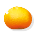
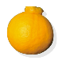
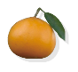
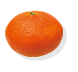
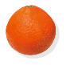
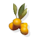
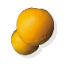
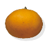
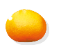

품종정보
-
감귤의 종류와 특징
세계적으로 100여개 나라에서 재배하고 있으며 2,000여종 이상의 감귤 종류가 있다고 알려져 있습니다. 구체적으로 구분해보면 밀감류(Mandarin), 오렌지(Orange), 레몬(Lemon), 문단류(Pummelo), 시트론(Citron), 금감과 탱자로 나눌 수 있습니다.
현재 우리나라에는 약 400여종의 감귤류가 있고, 재배되는 품종은 약 40여 품종입니다.
껍질을 쉽게 벗길 수 있어 생과로 많이 이용되는 온주밀감 위주로 재배되고 있으나 최근에는 만감류라고 알려진 한라봉, 천혜향, 레드향 같은 품종들도 늘어나고 있습니다.
밀감은 온주밀감, 뽕깡(병감), 탄제린 등으로 분화된 한편 밀감과 오렌지가 만나 탄골류를 탄생시켰으며, 주요품종으로는 한라봉, 청견, 천혜향, 이예감 등이 있습니다. 한라봉은 청견에 뽕깡(병감)을 교배해서 육성했고, 천혜향는 청견과 앙콜에 마코트 품종을 교배하여 육성한 품종입니다. 수확시기를 기준으로 한라봉은 2월부터, 천혜향는 3월부터 수확되어 만감류로 분류됩니다.
-
현재 생산 유통되는 주요 감귤 품종
-

온주
당도는 12브릭스, 산도가 1% 내외인 제주 감귤의 대 표 품종으로 과면이 매끄럽고 과피가 얇아 껍질이 잘 벗겨져 먹기가 편하다.
-

한라봉
꼭지가 튀어나온 모양이 한라산을 닮아 한라봉이라 불리며 과육이 부드럽고, 과즙이 풍부하며 당도가 13브릭스 이상으로 매우 높다.
-

천혜향
‘향이 천리를 간다’, ‘향이 천가지가 있다’ ‘하늘이 내 린 향’ 등 향이 좋아 천혜향이라고 불리며, 껍질이 얇고 당도가 한라봉 만큼 높다.
-

레드향
껍질색이 붉어 레드향이라는 이름이 생겼으며 껍질 이 잘 벗겨지고 과육이 부드럽다. 당도는 한라봉 만 큼 높다.
-

황금향
여왕의 품위를 지녔다고 해서 황금향으로 불리며, 알맹이가 통통하고 신맛이 적고 천혜향과는 다른 독 특한 향이 난다.
-

금감
낑깡 또는 금귤이라고도 불리며 껍질째 먹는 작은 귤이다.
-

청견
오렌지와 감귤의 장점을 가지고 있고 감귤보다 모양 이 더 둥글고 표면이 매끈하며, 오렌지보다는 껍질이 얇고 과즙이 풍부하다.
-

진지향
진한 오렌지향과 함께 과즙이 풍부하고 과육은 단단 해 저장성이 좋다.
-

-
제주 토종 재래귤
제주도는 감귤재배지 중 가장 위쪽인 북방한계선에 속합니다. 여러 기록을 미루어 보면 삼국시대부터 이미 귤을 먹어온 것으로 추정하고 있으며, 현재까지도 여러 종류의 재래귤이 존재하고 있습니다.
고문헌에 35종 정도의 재래귤이 있다고 기록되어 있으나 현재는 12종만이 남아 있습니다.
그 종류로는 병귤과 당유자, 진귤(산물), 동정귤, 감자, 사두감, 홍귤, 청귤, 빈귤, 지각, 유자, 편귤이 있으며 100년 이상 된 재래귤 나무는 총 185그루이며 품종을 보면 당유자와 진귤이 가장 많이 남아있습니다.